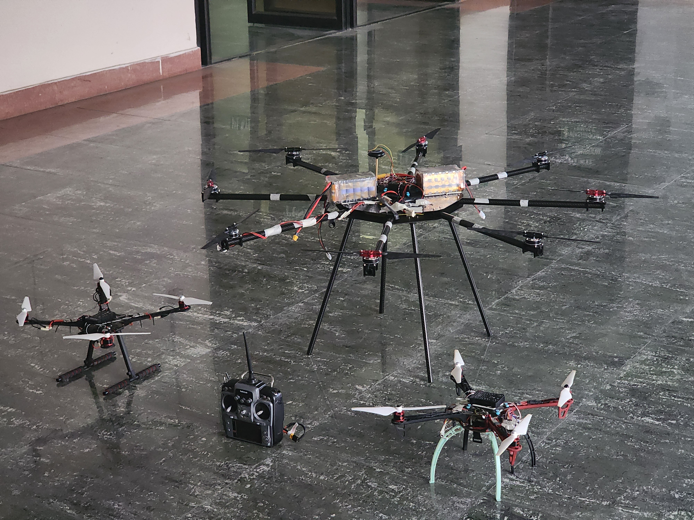
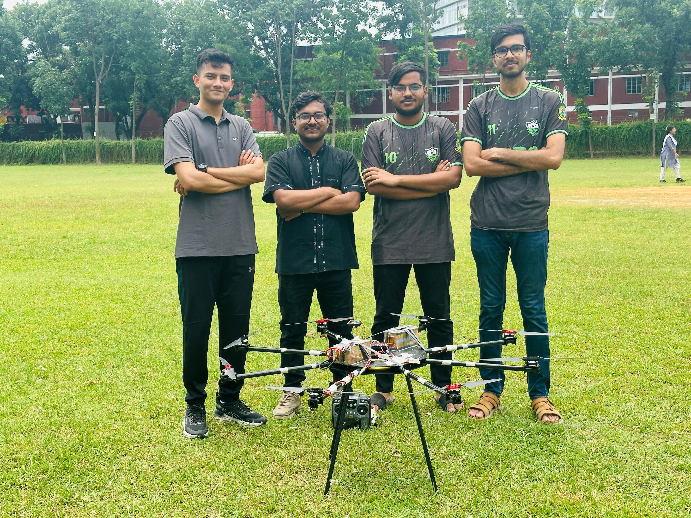
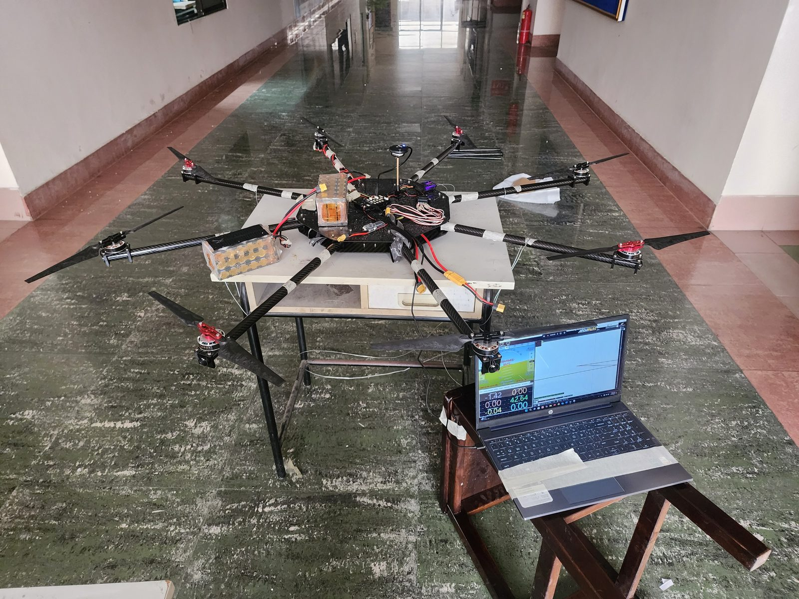
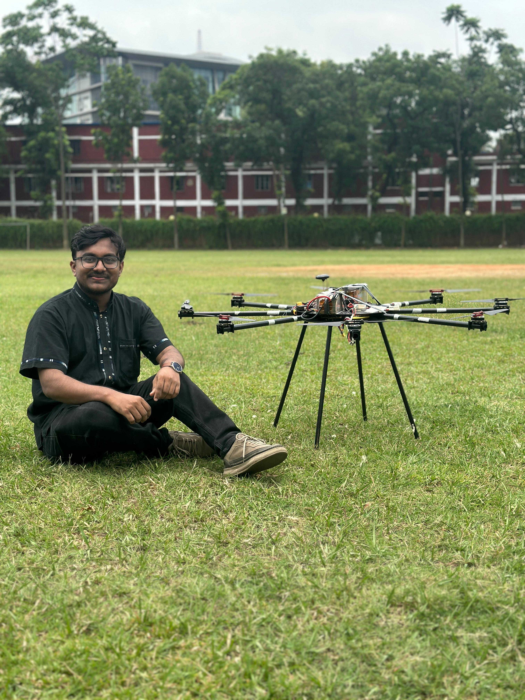

Multi-Copter Drone-Based Aerial Network for Autonomous Operation, Dynamic Target Detection & Analysis
A grant-funded undergraduate thesis: a master–slave drone swarm with an airborne Wi-Fi hub, distributed avionics, formation control, and onboard AI vision running on Raspberry Pi. Achieved sub-meter formation accuracy and 25+ minutes of autonomous endurance — and produced three peer-reviewed conference papers.
Why Build This?
Multi-UAV swarm operations typically rely on a ground station for coordination, command, and inter-drone communication. This dependency creates two fundamental limitations: the swarm's range is bounded by the ground link, and a ground-station failure ends the mission.
The thesis asked a focused question: can a swarm operate without a ground station at all? — by elevating the coordination role into the air itself.
The answer became the core architectural choice: a master–slave configuration with one airborne hub aircraft acting as the Wi-Fi backbone for the rest of the swarm. Each slave drone runs distributed avionics and onboard AI vision (Raspberry Pi class computer) for autonomous decision-making, sub-meter-accurate formation flight, and dynamic target detection.
Master–Slave with Airborne Wi-Fi Hub
The hub aircraft — a swarm-hub octocopter — carries the Wi-Fi access point and serves as the in-air coordinator. Slave drones connect to the hub directly, enabling peer-to-peer formation control without external infrastructure.
Raspberry Pi · AI Vision
Raspberry Pi · AI Vision
Raspberry Pi · AI Vision
Distributed Avionics

What We Achieved
The final platform validated the core hypothesis: ground-station-free multi-UAV formation flight is achievable with airborne networking and onboard AI. The work generated three peer-reviewed conference contributions and earned a competitive R&D grant from MIST.
Build & Test Phase
From bench testing the Raspberry Pi avionics through to outdoor formation trials.



Three Peer-Reviewed Papers
This thesis directly produced three conference publications. Click any paper to see venue details and links.
Tools & Technologies
What This Project Spawned
The thesis became the foundation for two follow-on undergraduate research projects that I co-supervised during my Research Assistant tenure:
- Real-Time Inter-Drone Collision Mitigation for UAV Swarm Architecture — extending the swarm's safety envelope.
- Sensor Data Fusion and Human Tracking in Swarm-Based Surveillance — enriching the perception stack.
The work also seeds my doctoral research at IISRI on aerial robotics, multi-UAV systems, autonomous perception, and wildfire detection — a natural progression from ground-station-free coordination to full aerial autonomy.